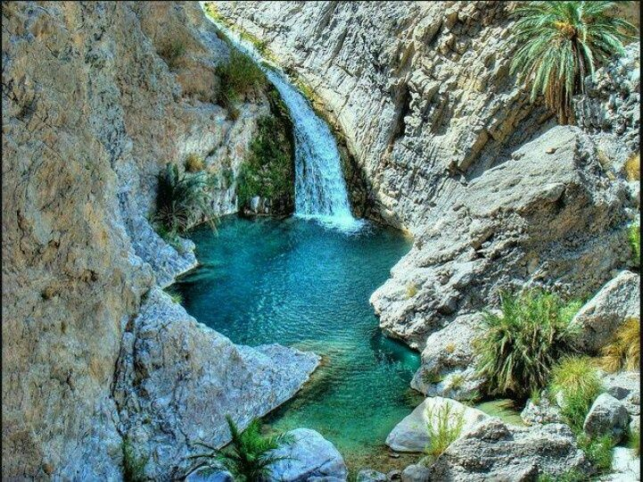

.jpg)

Tourism in Pakistan has immense potential due to the country’s rich history, diverse cultures, and stunning natural landscapes. Unfortunately, security concerns and negative media coverage have deterred many potential visitors from exploring this gem of a destination. However, in recent years, the government and tourism industry have been working to improve infrastructure and security, and there has been a noticeable increase in tourism. Pakistan offers a range of attractions for tourists, from the ancient ruins of the Indus Valley Civilization to the majestic mountains of the Himalayas and Karakoram ranges. The country also boasts beautiful beaches, deserts, forests, and vibrant cities, each with its own unique character and attractions. Food lovers will also appreciate the diverse and delicious cuisine.
Balochistan, the largest of the four provinces of Pakistan, spreads over an area of 347,190 Sq, Kms., forming 43.6 per cent of the total area of Pakistan. It has clustered population and is smallest in proportion as compared to that of other provinces. Its population, according to 1998 census, is xx million, having a low density per square kilometer. Physically, Balochistan is an extensive plateau of rough terrain divided into basins by ranges of sufficient heights and ruggedness. Broadly, Balochistan geographic area can be divided in to four distinct zones: Upper high lands, lower high lands, plains, and deserts. The upper highlands, known locally as Khorasan, rise as high as 3,700 meters, with valley floors about 1,500 meters above sea levels. The highlands include Makran, Kharan and Chaghi ranges in the West and Sulaiman, Pab, Kirther in the east. The Upper High Lands fall mainly in districts Zhob, Killa Saifullah, Pishin, Quetta, Ziarat and Kalat. It comprises a number of ranges such as Sulaiman, TobakKakari, Murdar, Zarghoon, Takatu, and Chiltan ranges.
KPK as it is called now is one of the four provinces of Pakistan, located in the north-west. It borders the Federally Administered Tribal Areas (FATA) to the west and south, Gilgit–Baltistan to the north-east, Azad Kashmir to the east and Punjab to the south-east. The province of Balochistan is located southwards while Afghanistan borders Khyber Pakhtunkhwa to the north-west The main ethnic group in the province are the Pashtun or Pathan people; other smaller ethnic groups include most notably the Hindkowans, Dards, Chitralis Kalash and Gujjars. The provincial language is Pashto, spoken by the majority as first language; Urdu, the national language, is widely spoken as a second language. English, the official language of Pakistan, is mainly used for official and literary purposes. The provincial capital and largest city is Peshawar.